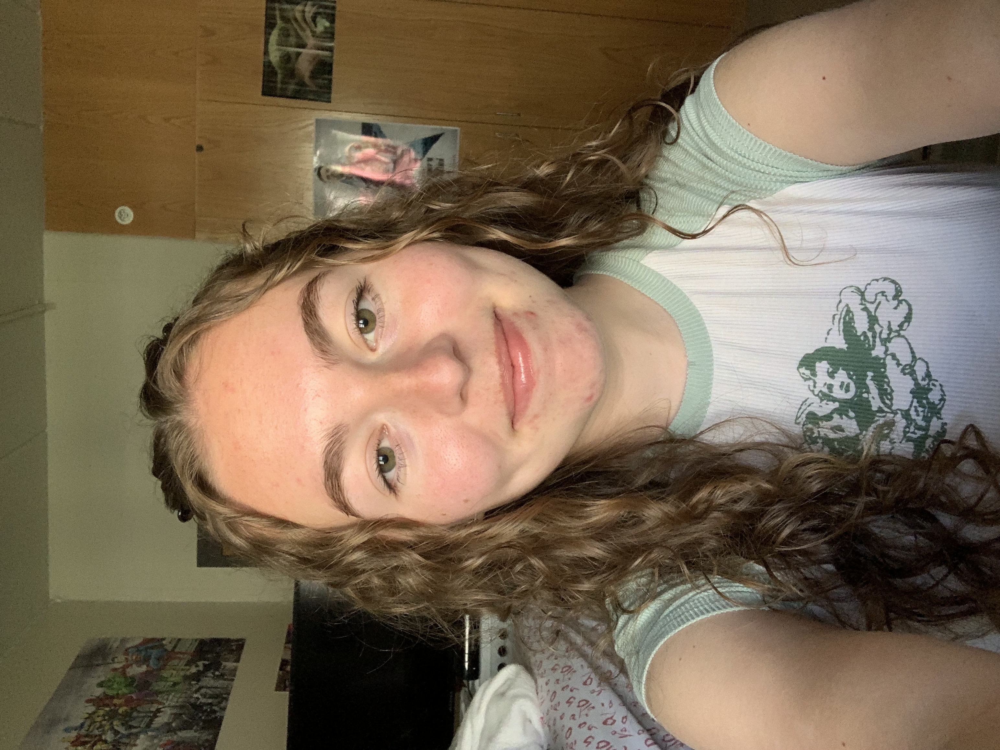

Contact
Madeline Yaeger
13460 Falcon View Ct
Bristow, VA 20136

Education
James Madison University, Harrisonburg, VA
School of Media Arts & Design
Creative Advertising concentration
Minor of General Business
Expected Graduation Date: May 2025
GPA: 3.875/4.0
Awards:
President's list: Fall 2021, Spring 2022, & Fall 2023
Dean's list: Fall 2022 & Spring 2023
Skills and Specialties
Langauges, Platforms, Frameworks
HTML, CSS, WordPress
Applications
Adobe Creative Cloud (Photoshop, InDesign, Illustrator), Microsoft Office (Word, Excel, PowerPoint), Sublime Text
Experience
January 2024 - Present
James Madison University, Harrisonburg, VA
James Madison University Undergraduate Research Journal
- Design team editor
- Collaborating with a team a of editors to produce and publish an undergraduate reseach journal for James Madison University
- Outlining and styling content in InDesign
May 2021 - August 2022
Make My Day Please, Bristow, VA
- Independent Contractor for a pet-sitting business
- Created bonds with customers to build trust
- Communicated with potential customers and current customers to provide information about the companies policies and offer comfort for the wellbeing of their pets.
- Recruited new customers to the business
June 2019 - August 2019
Pizza Boli's, Gainesville, VA
- Effectively communicated with customers
- Successfully resolved customer complaints and demonstrated problem-solving skills
- Conducted transactions in person, over the phone, and online
- Supervised product packaging
- Maintained cleaniness of the restaurant